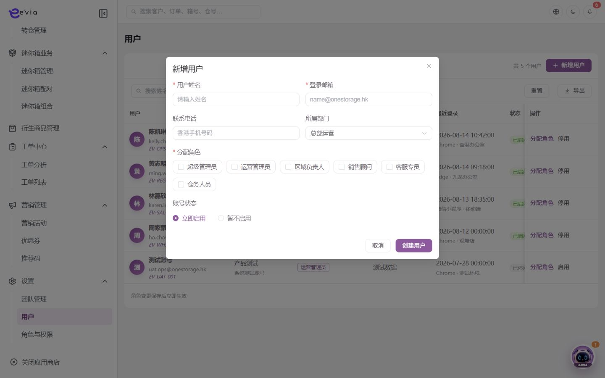
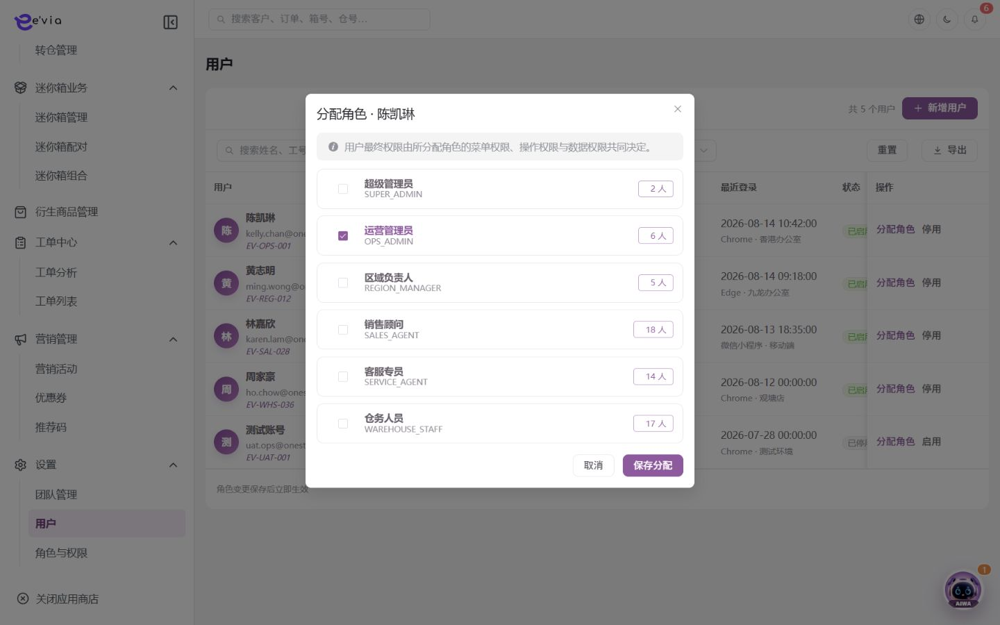

用户管理 PRD
下载 Word 文档用户管理 PRD
运营后台研发详细需求规格 · V2.5 · 2026-09-09
1 文档目标与范围
管理后台账号、身份、部门、角色、数据范围、登录状态和安全生命周期。 本文档明确页面字段、操作流程、业务规则、跨端契约、权限和验收条件。
| 属性 | 内容 |
|---|---|
| 文档编号 | OS-OPS-PRD-28 |
| 产品基线 | AiwaBot产品原型 V3.2 与 OneStorage运营后台原型 V1.1 |
| 版本 | V2.5 2026-09-09 |
1.1 原型界面依据
本模块界面直接取自 AiwaBot产品原型-v3.2.html。真实截图及功能点对应说明见“界面与功能对应说明”。
2 界面与页面结构
2.1 界面与功能对应说明
以下真实原型截图用于确定页面区域、入口和交互位置；字段校验、状态变化和服务端处理以本PRD功能规格为准。

| 说明项 | 界面辅助说明 |
|---|---|
| 对应功能点 | OS-OPS-PRD-28-FP03 停用；OS-OPS-PRD-28-FP04 解锁或启用；OS-OPS-PRD-28-FP05 导出 |
| 页面区域 | 配置页包含条件筛选、配置列表、启停或发布状态以及新增、编辑、查看等管理入口。 |
| 交互要求 | 编辑使用版本控制；启停、发布和权限变更需要确认并记录审计，已被业务引用的数据不得物理删除。 |
| 状态与权限 | 动作由allowedActions控制；无权限隐藏入口，接口仍执行403校验并记录审计。 |

| 说明项 | 界面辅助说明 |
|---|---|
| 对应功能点 | OS-OPS-PRD-28-FP01 新增用户 |
| 页面区域 | 新增界面按业务分组展示表单字段、关联对象选择、保存与取消操作。 |
| 交互要求 | 必填和格式错误在字段下方提示；关联对象实时校验；保存期间按钮防重复，关闭已修改表单需二次确认。 |
| 状态与权限 | 动作由allowedActions控制；无权限隐藏入口，接口仍执行403校验并记录审计。 |

| 说明项 | 界面辅助说明 |
|---|---|
| 对应功能点 | OS-OPS-PRD-28-FP02 分配角色 |
| 页面区域 | 角色分配界面展示用户摘要、可分配角色、当前角色和角色覆盖范围。 |
| 交互要求 | 保存前展示新增与移除权限差异；高权限角色需要二次确认，提交后立即刷新权限版本并记录完整审计。 |
| 状态与权限 | 动作由allowedActions控制；无权限隐藏入口，接口仍执行403校验并记录审计。 |
2.3 筛选条件
| 筛选项 | 规则 |
|---|---|
| 姓名、工号、账号或邮箱 | 支持组合查询、重置和返回保留。 |
| 部门 | 支持组合查询、重置和返回保留。 |
| 角色 | 支持组合查询、重置和返回保留。 |
| 状态 | 支持组合查询、重置和返回保留。 |
| 最近登录时间 | 支持组合查询、重置和返回保留。 |
3 列表字段规格
>| 字段ID | 字段 | 来源 | 展示与交互规则 |
|---|---|---|---|
| OS-OPS-PRD-28-L01 | 用户 | 业务主域 | 详情与导出保持一致；空值显示—，不使用模拟值补齐。 |
| OS-OPS-PRD-28-L02 | 部门 | 组织或门店主数据 | 显示名称并保留ID；数据范围变化后重新校验。 |
| OS-OPS-PRD-28-L03 | 角色 | 组织或门店主数据 | 显示名称并保留ID；数据范围变化后重新校验。 |
| OS-OPS-PRD-28-L04 | 数据范围 | 业务主域 | 详情与导出保持一致；空值显示—，不使用模拟值补齐。 |
| OS-OPS-PRD-28-L05 | 最近登录 | 业务主域 | 详情与导出保持一致；空值显示—，不使用模拟值补齐。 |
| OS-OPS-PRD-28-L06 | 状态 | 服务端/关联主数据 | 以标签显示服务端枚举；不可由前端自行推导。 |
| OS-OPS-PRD-28-L07 | 操作 | 服务端/关联主数据 | 根据allowedActions显示查看、编辑及状态动作；后端再次鉴权。 |
4 新增与编辑表单
| 字段ID | 字段 | 控件 | 必填 | 校验与保存规则 |
|---|---|---|---|---|
| OS-OPS-PRD-28-F01 | 姓名 | 文本框 | 条件必填 | 去除首尾空格；保存原始值与标准化值。 |
| OS-OPS-PRD-28-F02 | 工号 | 文本框 | 条件必填 | 去除首尾空格；保存原始值与标准化值。 |
| OS-OPS-PRD-28-F03 | 登录账号 | 文本框 | 条件必填 | 去除首尾空格；保存原始值与标准化值。 |
| OS-OPS-PRD-28-F04 | 邮箱 | 邮箱输入 | 选填 | 格式校验并转小写保存检索值。 |
| OS-OPS-PRD-28-F05 | 手机号 | 区号加电话号码 | 必填 | 保存标准化E.164值；香港号码按8位校验。 |
| OS-OPS-PRD-28-F06 | 部门 | 文本框 | 条件必填 | 去除首尾空格；保存原始值与标准化值。 |
| OS-OPS-PRD-28-F07 | 岗位 | 文本框 | 条件必填 | 去除首尾空格；保存原始值与标准化值。 |
| OS-OPS-PRD-28-F08 | 主团队 | 单选或下拉选择 | 必填 | 选项来自服务端字典；提交编码值，界面显示名称。 |
| OS-OPS-PRD-28-F09 | 角色 | 文本框 | 条件必填 | 去除首尾空格；保存原始值与标准化值。 |
| OS-OPS-PRD-28-F10 | 附加数据范围 | 单选或下拉选择 | 必填 | 选项来自服务端字典；提交编码值，界面显示名称。 |
| OS-OPS-PRD-28-F11 | 语言 | 文本框 | 条件必填 | 去除首尾空格；保存原始值与标准化值。 |
| OS-OPS-PRD-28-F12 | 时区 | 文本框 | 条件必填 | 去除首尾空格；保存原始值与标准化值。 |
| OS-OPS-PRD-28-F13 | 认证方式 | 单选或下拉选择 | 必填 | 选项来自服务端字典；提交编码值，界面显示名称。 |
| OS-OPS-PRD-28-F14 | 状态 | 单选或下拉选择 | 必填 | 选项来自服务端字典；提交编码值，界面显示名称。 |
| OS-OPS-PRD-28-F15 | 备注 | 多行文本 | 条件必填 | 最多500字；拒绝或异常原因不得只输入空白。 |
4.1 详情入口与页面容器
从列表查看入口、业务编号链接或关联对象深链打开详情。界面依据原型真实截图“用户管理列表”；原型没有独立详情画面时不使用示例图，按现有列表视觉体系实现。
| 界面状态 | 完整处理规则 |
|---|---|
| 打开与返回 | 保存列表筛选、分页、排序和滚动位置，返回后仅刷新变化行 |
| 加载中 | 显示业务编号与骨架，禁止闪现上一条记录 |
| 加载成功 | 返回id、version、状态、asOfTime、fieldPermissions和allowedActions |
| 不存在或无权限 | 不泄露敏感信息，提供返回入口并记录拒绝审计 |
| 版本变化 | 自动刷新只读区，存在未提交操作时提示比较 |
| 部分失败 | 保留成功信息组，失败组显示traceId和重试 |
4.2 顶部摘要与信息组
详情覆盖新增、编辑以及系统处理后形成的有效字段，不得只复制列表列。
| 信息组 | 展示字段 | 展示与交互规则 |
|---|---|---|
| 标识与基本资料 | 用户、数据范围、最近登录、姓名、工号、登录账号、邮箱、手机号、岗位、附加数据范围、语言、时区、认证方式 | 完整显示业务编号与主属性；编号支持复制且不可编辑，敏感字段按字段权限脱敏。 |
| 归属与关联对象 | 部门、角色、主团队 | 显示名称加业务编号；有查看权限时可打开关联对象，无权限时只显示允许的摘要。 |
| 状态责任与时间 | 状态 | 显示当前状态、负责人、业务时间和服务器更新时间；状态由服务端枚举与时间线共同解释。 |
| 附件说明与补充信息 | 备注 | 附件展示文件名、版本、扫描状态和权限动作；长文本保留换行并记录创建人与时间。 |
| 系统与审计信息 | version、createdAt、createdBy、updatedAt、updatedBy、sourceChannel、requestId | 作为详情响应固定字段；用于并发控制、来源说明和操作追踪，不允许前端伪造。 |
4.3 状态时间线与处理记录
| 区域 | 内容 | 规则 |
|---|---|---|
| 当前状态 | 待激活→启用→锁定/停用→注销 | 由服务端返回，不由前端推断 |
| 状态时间线 | 创建、审批、执行、完成、取消、失败和恢复节点 | 显示eventId、操作者、来源端、业务时间、接收时间、原因和结果 |
| 操作记录 | 字段变更、状态动作、下载导出和权限拒绝 | 倒序分页并对敏感值脱敏 |
| 异步任务 | 通知、同步、文件、第三方、导出或补偿 | 显示任务编号、状态、重试次数和最近错误 |
4.4 关联对象与页签
| 页签 | 范围 | 规则 |
|---|---|---|
| 基本资料 | 当前对象全部有效字段 | 按fieldPermissions显示、脱敏或隐藏 |
| 关联业务 | 身份、部门、岗位、团队、角色、数据范围、认证方式、会话、开放任务与安全审计 | 按权限分页并提供目标detailUrl |
| 附件凭证 | 当前对象及处理过程文件 | 显示版本、扫描、哈希与可用动作 |
| 处理记录 | 时间线、日志与异步任务 | 按类型筛选并使用香港时区 |
4.5 详情动作与状态控制
| 动作ID | 动作 | 角色 | 前置条件 | 成功及刷新规则 |
|---|---|---|---|---|
| OS-OPS-PRD-28-DA01 | 新增用户 | 具备本模块创建权限的运营人员 | 用户登录有效并具备创建或批量权限；关联主数据有效且属于dataScope；页面已加载最新字典、业务配置和allowedActions。 | 校验账号、工号和邮箱唯一并发送激活。 成功后刷新version、状态、时间线、关联数量和allowedActions；失败不得提前改变界面主状态。 |
| OS-OPS-PRD-28-DA02 | 分配角色 | 运营管理员、区域或门店负责人 | 用户登录有效；目标对象存在且属于用户dataScope；当前状态包含该动作；页面持有最新version和allowedActions。涉及金额、库存、附件或第三方结果时必须回源确认。 | 显示角色权限摘要和数据范围变化。 成功后刷新version、状态、时间线、关联数量和allowedActions；失败不得提前改变界面主状态。 |
| OS-OPS-PRD-28-DA03 | 停用 | 对象负责人或具备状态管理权限的管理员 | 用户登录有效；目标对象存在且属于用户dataScope；当前状态包含该动作；页面持有最新version和allowedActions。涉及金额、库存、附件或第三方结果时必须回源确认。 | 撤销会话和令牌并转移开放任务。 成功后刷新version、状态、时间线、关联数量和allowedActions；失败不得提前改变界面主状态。 |
| OS-OPS-PRD-28-DA04 | 解锁或启用 | 对象负责人或具备状态管理权限的管理员 | 用户登录有效；目标对象存在且属于用户dataScope；当前状态包含该动作；页面持有最新version和allowedActions。涉及金额、库存、附件或第三方结果时必须回源确认。 | 记录原因并执行身份复核。 成功后刷新version、状态、时间线、关联数量和allowedActions；失败不得提前改变界面主状态。 |
| OS-OPS-PRD-28-DA05 | 导出 | 具备导出或报告权限的用户 | 用户具备导出或报告权限，当前查询已完成且筛选合法；导出列不得超出字段权限，任务配额未超限。 | 不导出密码、密钥和完整认证信息。 成功后刷新version、状态、时间线、关联数量和allowedActions；失败不得提前改变界面主状态。 |
仅显示allowedActions返回的动作
高风险动作二次确认并展示影响
提交携带expectedVersion和clientRequestId
超时先查结果再重试
部分成功返回逐项结果和补偿入口
4.6 接口事件与验收
| 契约 | 路径或事件 | 要求 |
|---|---|---|
| 详情聚合 | GET /ops/v1/users/{id} | 资料、状态、version、权限、动作与关联计数 |
| 状态时间线 | GET /ops/v1/users/{id}/timeline | 不可覆盖的业务节点 |
| 关联对象 | GET /ops/v1/users/{id}/relations | 目标对象权限与分页 |
| 操作记录 | GET /ops/v1/users/{id}/activities | 变更、动作、任务与审计 |
| 业务动作 | POST /ops/v1/users/{id}/actions/{actionCode} | 幂等和并发控制 |
| 变更事件 | 用户管理.DetailChanged.v1 | 按changedSections刷新 |
详情覆盖新增编辑与系统字段
状态时间线和动作使用同一version
权限在返回字段前生效
关联数量与明细一致
附件和下载有审计
并发冲突不覆盖输入
异步失败可追踪补偿
返回列表保留上下文
5 功能点详细设计
| 功能编号 | 功能点 | 目标 |
|---|---|---|
| OS-OPS-PRD-28-FP01 | 新增用户 | 校验账号、工号和邮箱唯一并发送激活。 |
| OS-OPS-PRD-28-FP02 | 分配角色 | 显示角色权限摘要和数据范围变化。 |
| OS-OPS-PRD-28-FP03 | 停用 | 撤销会话和令牌并转移开放任务。 |
| OS-OPS-PRD-28-FP04 | 解锁或启用 | 记录原因并执行身份复核。 |
| OS-OPS-PRD-28-FP05 | 导出 | 不导出密码、密钥和完整认证信息。 |
5.1 新增用户
功能编号：OS-OPS-PRD-28-FP01
功能目的：校验账号、工号和邮箱唯一并发送激活。
使用角色与入口：具备本模块创建权限的运营人员；从模块列表右上角新增入口或关联对象快捷入口进入。入口显示前校验菜单、动作和数据范围。
前置条件：用户登录有效并具备创建或批量权限；关联主数据有效且属于dataScope；页面已加载最新字典、业务配置和allowedActions。
界面操作：打开新增界面，按页面分组录入姓名、工号、登录账号、邮箱、手机号、部门、岗位、主团队、角色、附加数据范围、语言、时区；关联对象使用检索选择。点击保存前完成字段级和跨字段校验。
系统处理：服务端使用clientRequestId幂等校验，在事务内生成业务编号、主对象、初始状态和审计记录；事务提交后发布领域事件。校验账号、工号和邮箱唯一并发送激活。
业务规则：账号和工号全局唯一；禁止管理员停用自己的唯一管理账号。服务端必须重复校验。
成功结果：页面提示“新增用户成功”，刷新对象状态、version、allowedActions、关联对象和时间线；如产生异步任务，同时显示任务编号和进度入口。
异常与恢复：400保留输入；403拒绝并审计；409要求刷新；超时按clientRequestId查询；部分成功显示明细和补偿入口。
跨端影响：工单小程序和运营后台共享企业身份但使用独立客户端会话；接收端打开后重新鉴权并回源。
验收条件：在允许状态下完成新增用户时仅产生一次预期数据变化和一次审计记录；越权、错误状态、重复提交及版本冲突均不得产生重复对象或越级状态。
5.2 分配角色
功能编号：OS-OPS-PRD-28-FP02
功能目的：显示角色权限摘要和数据范围变化。
使用角色与入口：运营管理员、区域或门店负责人；从列表批量工具栏或详情页负责人区域进入。入口显示前校验菜单、动作和数据范围。
前置条件：用户登录有效；目标对象存在且属于用户dataScope；当前状态包含该动作；页面持有最新version和allowedActions。涉及金额、库存、附件或第三方结果时必须回源确认。
界面操作：选择记录后指定负责人或团队，界面显示状态、备注和影响数量；确认前逐条标示不可分配原因。
系统处理：服务端调用POST /ops/v1/users/{id}/actions/{action}，校验权限、当前状态、expectedVersion和业务不变量，在事务中写入状态及时间线。显示角色权限摘要和数据范围变化。
业务规则：角色和附加数据范围取最小授权原则；认证和角色变更写入安全审计。服务端必须重复校验。
成功结果：页面提示“分配角色成功”，刷新对象状态、version、allowedActions、关联对象和时间线；如产生异步任务，同时显示任务编号和进度入口。
异常与恢复：400保留输入；403拒绝并审计；409要求刷新；超时按clientRequestId查询；部分成功显示明细和补偿入口。
跨端影响：角色发布后跨端重新获取权限；接收端打开后重新鉴权并回源。
验收条件：在允许状态下完成分配角色时仅产生一次预期数据变化和一次审计记录；越权、错误状态、重复提交及版本冲突均不得产生重复对象或越级状态。
5.3 停用
功能编号：OS-OPS-PRD-28-FP03
功能目的：撤销会话和令牌并转移开放任务。
使用角色与入口：对象负责人或具备状态管理权限的管理员；从列表行操作或详情页状态动作区进入。入口显示前校验菜单、动作和数据范围。
前置条件：用户登录有效；目标对象存在且属于用户dataScope；当前状态包含该动作；页面持有最新version和allowedActions。涉及金额、库存、附件或第三方结果时必须回源确认。
界面操作：在详情或行操作中触发停用，界面展示当前状态、目标状态、影响范围和原因；高风险动作二次确认。
系统处理：服务端调用POST /ops/v1/users/{id}/actions/{action}，校验权限、当前状态、expectedVersion和业务不变量，在事务中写入状态及时间线。撤销会话和令牌并转移开放任务。
业务规则：禁止管理员停用自己的唯一管理账号；停用立即使所有会话失效。服务端必须重复校验。
成功结果：页面提示“停用成功”，刷新对象状态、version、allowedActions、关联对象和时间线；如产生异步任务，同时显示任务编号和进度入口。
异常与恢复：400保留输入；403拒绝并审计；409要求刷新；超时按clientRequestId查询；部分成功显示明细和补偿入口。
跨端影响：离职停用同步移除团队和任务分派；接收端打开后重新鉴权并回源。
验收条件：在允许状态下完成停用时仅产生一次预期数据变化和一次审计记录；越权、错误状态、重复提交及版本冲突均不得产生重复对象或越级状态。
5.4 解锁或启用
功能编号：OS-OPS-PRD-28-FP04
功能目的：记录原因并执行身份复核。
使用角色与入口：对象负责人或具备状态管理权限的管理员；从列表行操作或详情页状态动作区进入。入口显示前校验菜单、动作和数据范围。
前置条件：用户登录有效；目标对象存在且属于用户dataScope；当前状态包含该动作；页面持有最新version和allowedActions。涉及金额、库存、附件或第三方结果时必须回源确认。
界面操作：在详情或行操作中触发解锁或启用，界面展示当前状态、目标状态、影响范围和原因；高风险动作二次确认。
系统处理：服务端调用POST /ops/v1/users/{id}/actions/{action}，校验权限、当前状态、expectedVersion和业务不变量，在事务中写入状态及时间线。记录原因并执行身份复核。
业务规则：账号和工号全局唯一；禁止管理员停用自己的唯一管理账号。服务端必须重复校验。
成功结果：页面提示“解锁或启用成功”，刷新对象状态、version、allowedActions、关联对象和时间线；如产生异步任务，同时显示任务编号和进度入口。
异常与恢复：400保留输入；403拒绝并审计；409要求刷新；超时按clientRequestId查询；部分成功显示明细和补偿入口。
跨端影响：工单小程序和运营后台共享企业身份但使用独立客户端会话；接收端打开后重新鉴权并回源。
验收条件：在允许状态下完成解锁或启用时仅产生一次预期数据变化和一次审计记录；越权、错误状态、重复提交及版本冲突均不得产生重复对象或越级状态。
5.5 导出
功能编号：OS-OPS-PRD-28-FP05
功能目的：不导出密码、密钥和完整认证信息。
使用角色与入口：具备导出或报告权限的用户；从列表工具栏或报告生成入口进入。入口显示前校验菜单、动作和数据范围。
前置条件：用户具备导出或报告权限，当前查询已完成且筛选合法；导出列不得超出字段权限，任务配额未超限。
界面操作：沿用当前筛选与列权限，选择导出范围或报告格式；任务进入进度中心，完成后提供限时下载。
系统处理：服务端冻结查询条件和dataScope并创建异步任务；逐条校验权限、版本和状态，返回成功、失败及原因明细。不导出密码、密钥和完整认证信息。
业务规则：导出继承当前筛选、数据范围和字段权限；文件使用短期签名地址；生成、下载和失败均记录审计。。服务端必须重复校验。
成功结果：界面创建导出任务并显示任务编号、生成进度、有效期和下载入口；下载内容与任务冻结的筛选及列权限一致。
异常与恢复：400保留输入；403拒绝并审计；409要求刷新；超时按clientRequestId查询；部分成功显示明细和补偿入口。
跨端影响：角色发布后跨端重新获取权限；接收端打开后重新鉴权并回源。
验收条件：相同筛选和字段权限生成的导出数据量与列表一致；重复提交复用幂等结果，越权字段不进入文件。
6 状态机与业务规则
| 对象 | 状态流转 |
|---|---|
| 用户管理 | 待激活→启用→锁定/停用→注销 |
| 异步任务 | 待执行→执行中→成功/失败→重试/人工处理 |
| 规则ID | 业务规则 |
|---|---|
| OS-OPS-PRD-28-R01 | 账号和工号全局唯一 |
| OS-OPS-PRD-28-R02 | 禁止管理员停用自己的唯一管理账号 |
| OS-OPS-PRD-28-R03 | 角色和附加数据范围取最小授权原则 |
| OS-OPS-PRD-28-R04 | 停用立即使所有会话失效 |
| OS-OPS-PRD-28-R05 | 认证和角色变更写入安全审计 |
| OS-OPS-PRD-28-R06 | 所有写请求携带clientRequestId和expectedVersion，重复请求返回首次结果 |
| OS-OPS-PRD-28-R07 | 服务端返回allowedActions，前端仅据此展示按钮，后端仍逐动作鉴权 |
| OS-OPS-PRD-28-R08 | 列表、详情、关联选择器、统计和导出使用同一数据范围 |
| OS-OPS-PRD-28-R09 | 创建、编辑、状态流转、导出、下载和审批均记录操作审计 |
| OS-OPS-PRD-28-R10 | 第三方调用失败不得伪装主业务成功，进入可重试或人工处理状态 |
7 业务处理链路
配置和治理操作使用审批、发布和版本管理
下游状态变化通过领域事件处理
批量和异步任务提供状态与失败明细
8 跨端交互规则
| 规则ID | 交互规则 |
|---|---|
| OS-OPS-PRD-28-X01 | 工单小程序和运营后台共享企业身份但使用独立客户端会话 |
| OS-OPS-PRD-28-X02 | 角色发布后跨端重新获取权限 |
| OS-OPS-PRD-28-X03 | 离职停用同步移除团队和任务分派 |
客户小程序仅访问本人数据，工单小程序仅访问本人或团队任务
深链打开后重新校验身份、权限和最新状态
金额、库存、状态和allowedActions必须回源
离线重试沿用同一clientRequestId
9 接口与事件契约
| 契约 | 路径或事件 | 要求 |
|---|---|---|
| 列表 | GET /ops/v1/users | 分页、排序、筛选、数据范围和脱敏 |
| 详情 | GET /ops/v1/users/{id} | version、关联对象、时间线和allowedActions |
| 新增 | POST /ops/v1/users | clientRequestId幂等 |
| 编辑 | PATCH /ops/v1/users/{id} | expectedVersion并发控制 |
| 动作 | POST /ops/v1/users/{id}/actions/{action} | 动作级权限和状态前置 |
| 事件 | 用户管理.Changed.v1 | eventId、aggregateId、version和occurredAt |
10 异常与边界处理
| 场景 | 处理 |
|---|---|
| 400字段错误 | 字段级提示并保留输入 |
| 403无权限 | 拒绝并记录审计 |
| 404不存在 | 不泄露额外对象信息 |
| 409版本冲突 | 刷新后重新操作 |
| 重复请求 | 返回首次幂等结果 |
| 第三方失败 | 进入重试或人工处理 |
11 验收标准
| 验收ID | 验收条件 |
|---|---|
| OS-OPS-PRD-28-AC01 | 列表字段、筛选、分页、排序和导出一致 |
| OS-OPS-PRD-28-AC02 | 表单字段、必填和跨字段校验完整 |
| OS-OPS-PRD-28-AC03 | 所有动作同时校验权限、数据范围和状态 |
| OS-OPS-PRD-28-AC04 | 重复请求无重复记录或副作用 |
| OS-OPS-PRD-28-AC05 | 跨端编号、状态、金额和时间一致 |
| OS-OPS-PRD-28-AC06 | 异常和空数据有明确反馈 |
| OS-OPS-PRD-28-AC07 | 敏感字段按权限脱敏并审计 |
| OS-OPS-PRD-28-AC08 | P0规则具有自动化测试 |
| OS-OPS-PRD-28-AC09 | 详情页覆盖新增编辑字段、系统字段、状态时间线、关联对象、附件与审计记录 |
| OS-OPS-PRD-28-AC10 | 详情动作由allowedActions控制并执行对象、字段、数据范围、状态、幂等和并发校验 |
| OS-OPS-PRD-28-AC11 | 从列表进入和返回详情时完整保留筛选、分页、排序与滚动上下文 |
| OS-OPS-PRD-28-AC12 | 详情事件仅刷新changedSections且各页签回源后与业务主域一致 |